Al completar este curso, seras capaz de comprender:
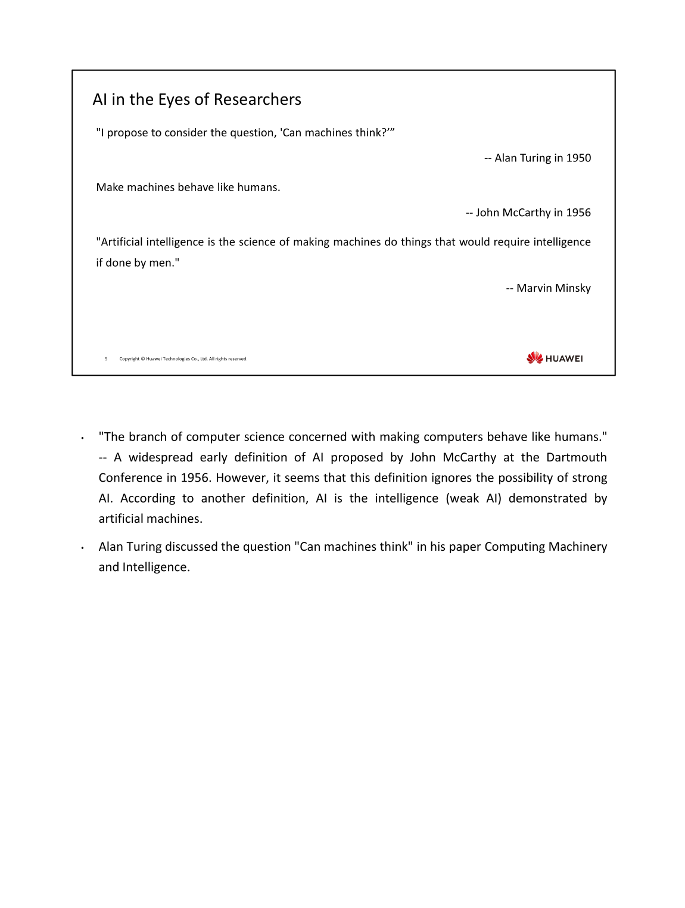
«Propongo considerar la pregunta: ¿Pueden pensar las maquinas?»
— Alan Turing en 1950
«Hacer que las maquinas se comporten como humanos.»
— John McCarthy en 1956
«La inteligencia artificial es la ciencia de hacer que las maquinas hagan cosas que requerirían inteligencia si fueran hechas por humanos.»
— Marvin Minsky
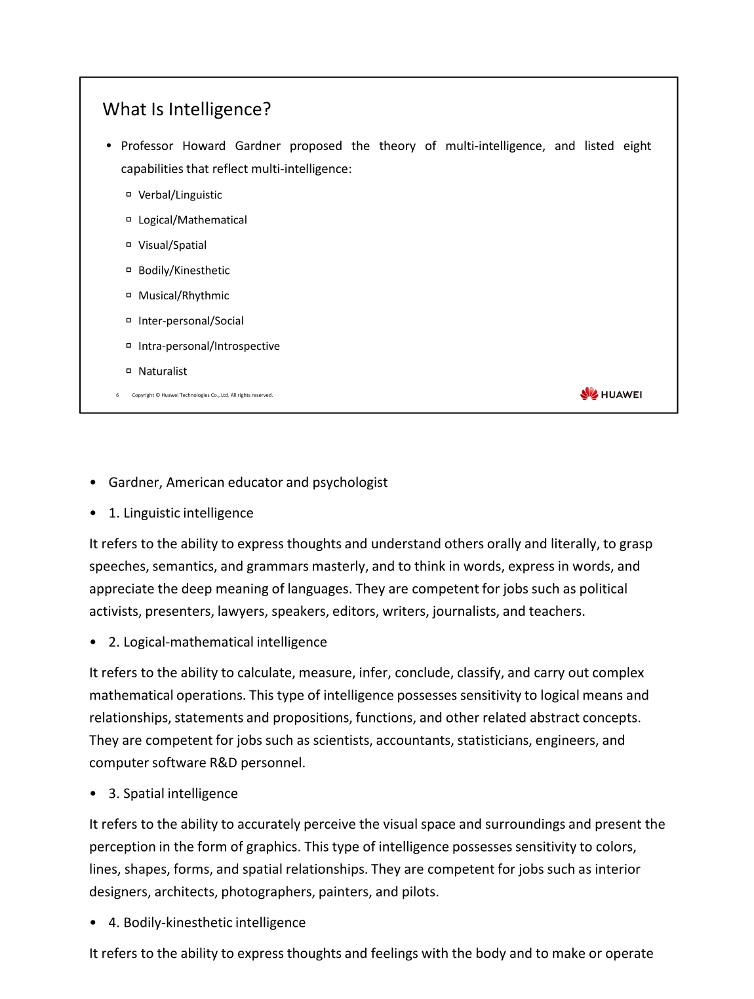
El profesor Howard Gardner propuso la teoria de las inteligencias multiples y enumero ocho capacidades que las reflejan:
Gardner, educador y psicologo estadounidense.
El aprendizaje automatico puede entenderse desde multiples aspectos. Tom Mitchell, conocido como el «padrino del aprendizaje automatico global», definio el aprendizaje automatico como: Para una tarea T y una metrica de rendimiento P, si el rendimiento de un programa informatico medido por P en T mejora automaticamente con la experiencia E, entonces el programa informatico esta aprendiendo de la experiencia E. Estas definiciones son simples y abstractas. Sin embargo, a medida que profundizamos nuestra comprension del aprendizaje automatico, descubriremos que la connotacion y extension del aprendizaje automatico cambian con el tiempo. Debido a que involucra una variedad de campos y aplicaciones y se desarrolla rapidamente, no es facil definir el aprendizaje automatico de manera simple y clara.
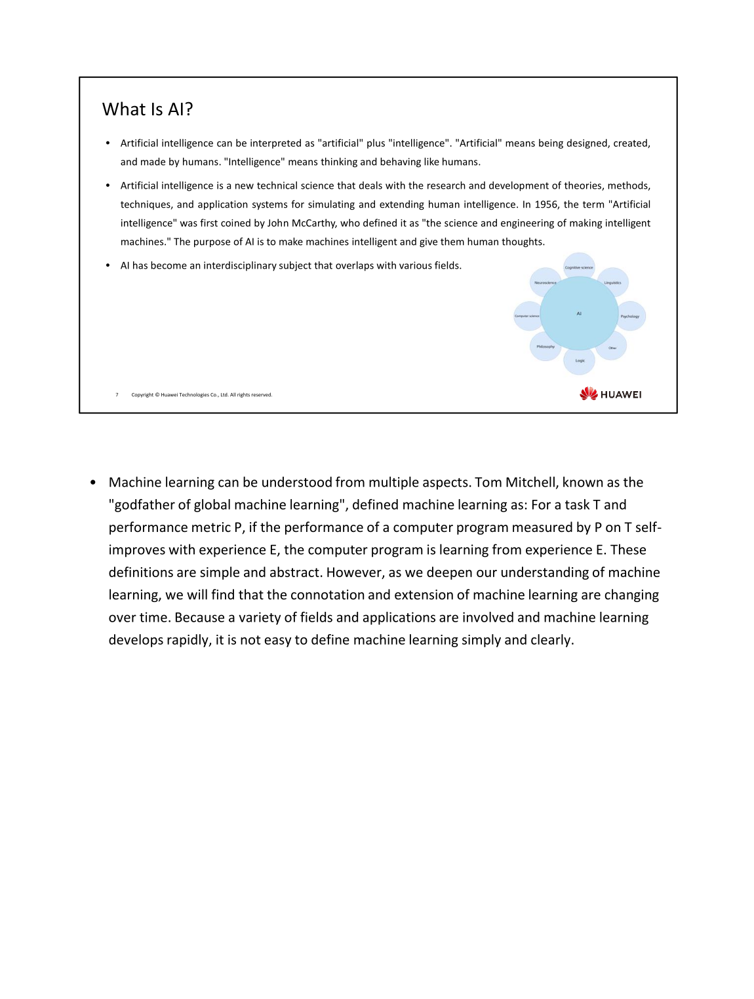
IA → Area de investigacion
Aprendizaje Automatico → Forma de implementar la IA
Aprendizaje Profundo → Corriente principal actual
Muchas escuelas de pensamiento han surgido durante el desarrollo de la IA.
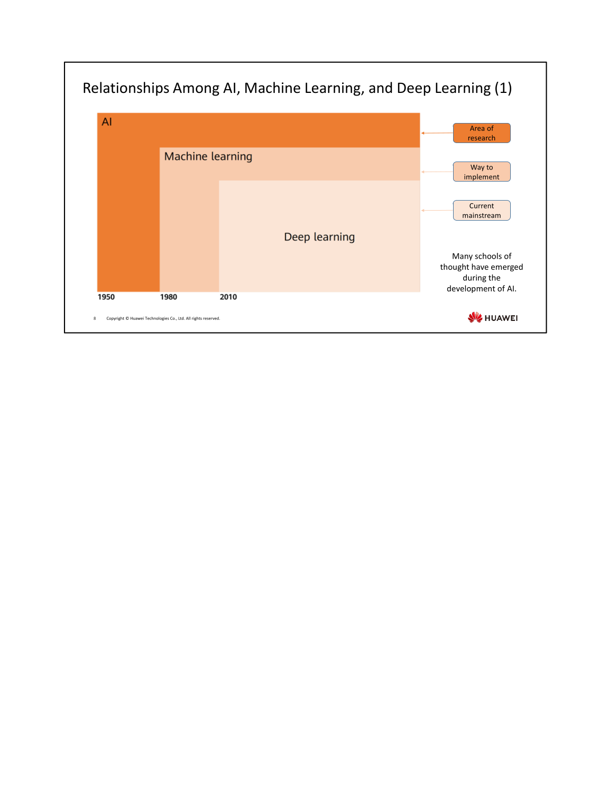
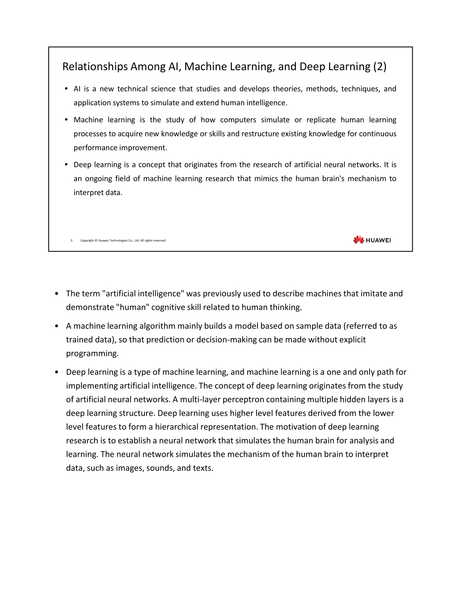
La manzana en los ojos del simbolismo
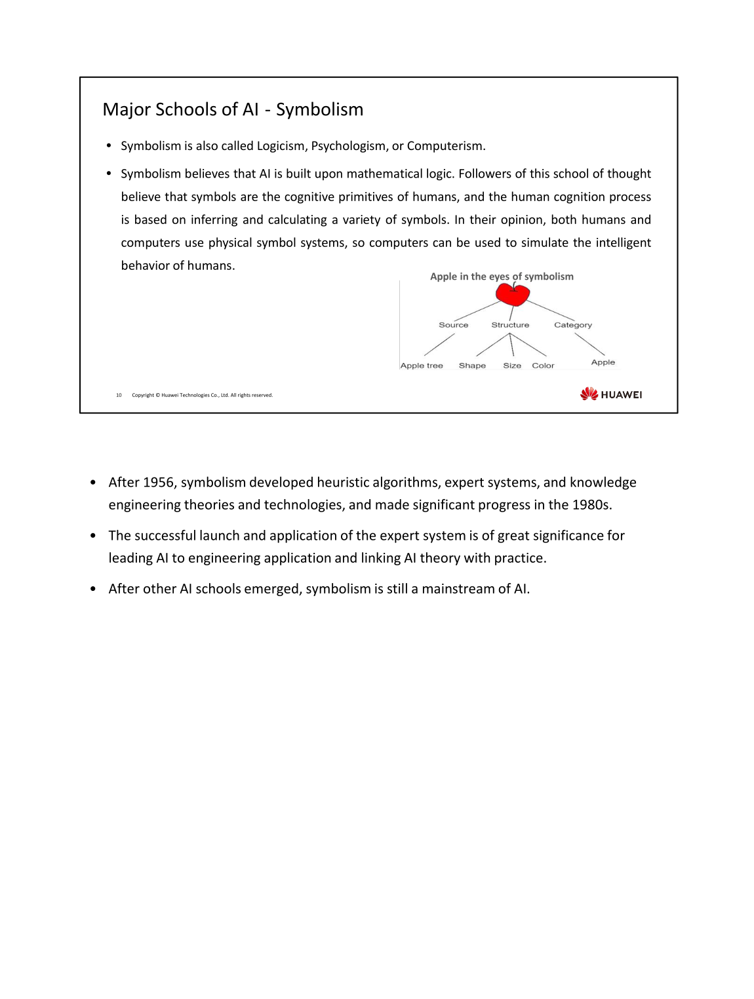
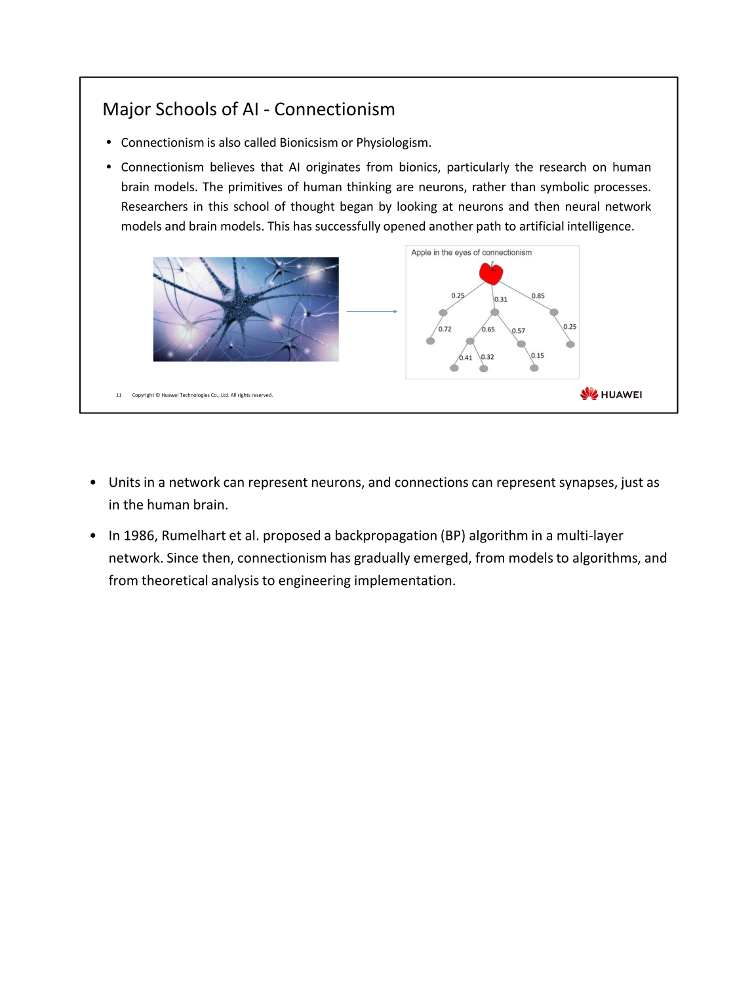
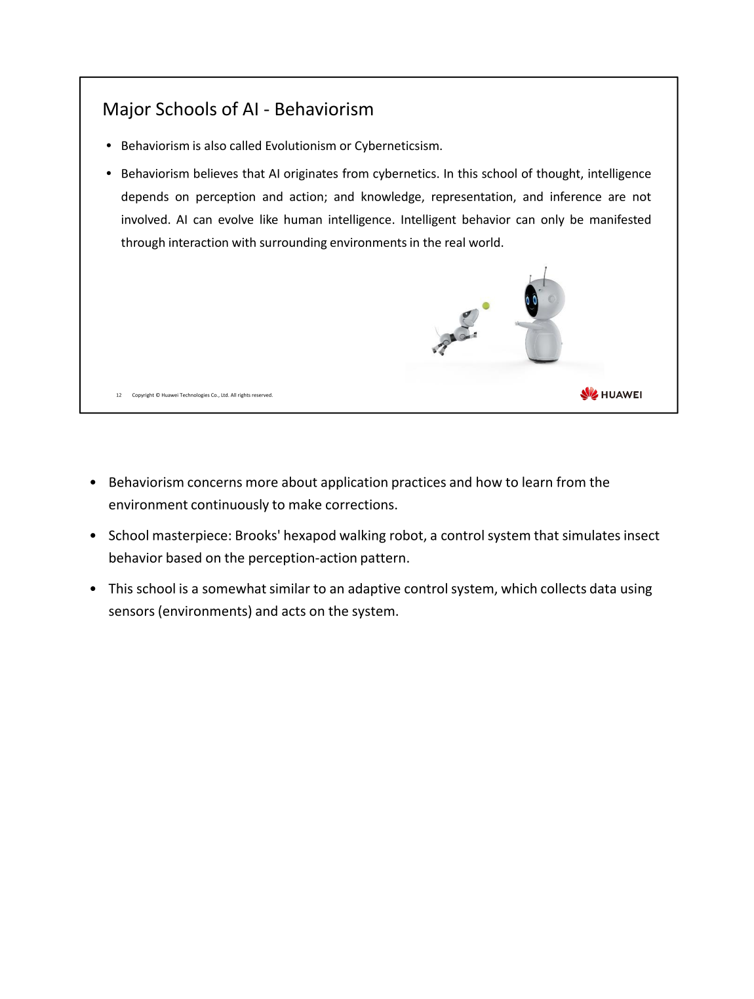
Independientemente de la escuela de pensamiento, la investigacion en IA necesita tres elementos clave:
Poder de Computo (Computing Power)
El motor de la IA y la fuerza motriz detras de los sistemas de IA. Incluye centros de datos, computacion distribuida, computacion en la nube, computacion en el borde y computacion de alto rendimiento (HPC).
Datos (Data)
La fuente de energia de la IA y el combustible para los sistemas de IA. Incluye mineria de datos, analisis de datos, almacenes de datos, visualizacion de datos, seguridad de datos y proteccion de la privacidad.
Algoritmos (Algorithms)
El cerebro de la IA y el centro de comando de los sistemas de IA. Incluye aprendizaje automatico (ML), aprendizaje profundo (DL), procesamiento de lenguaje natural (NLP), vision por computadora (CV) y sistemas de recomendacion.
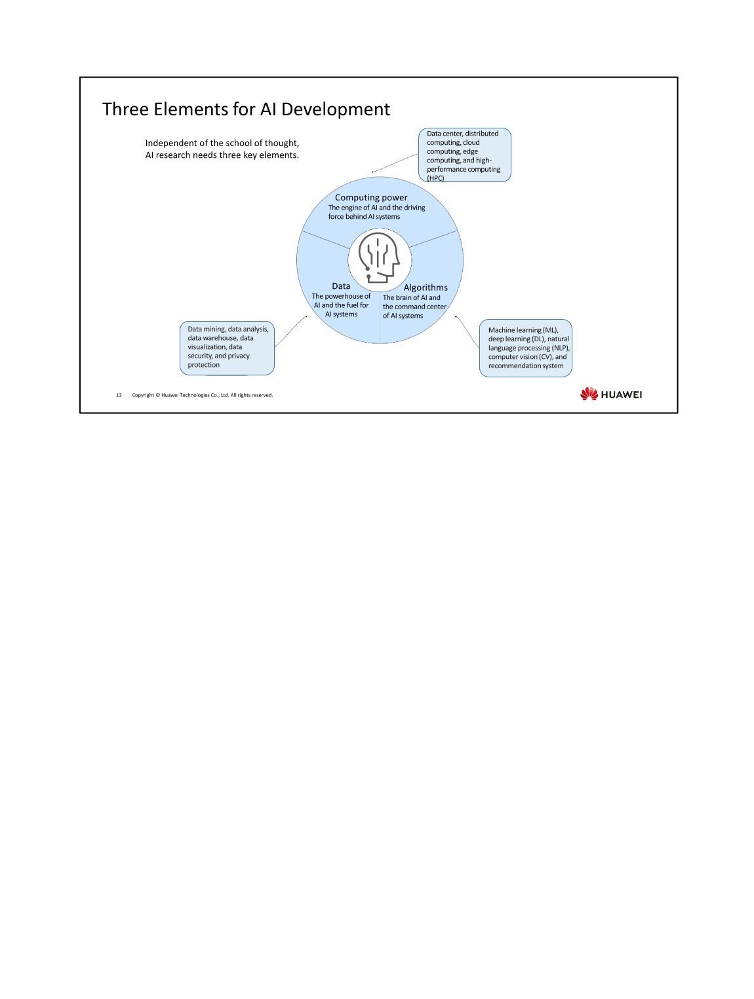
La diapositiva muestra el ecosistema completo de la industria de IA, incluyendo las capas de infraestructura, plataformas, herramientas de desarrollo y aplicaciones que componen el panorama actual de la inteligencia artificial.
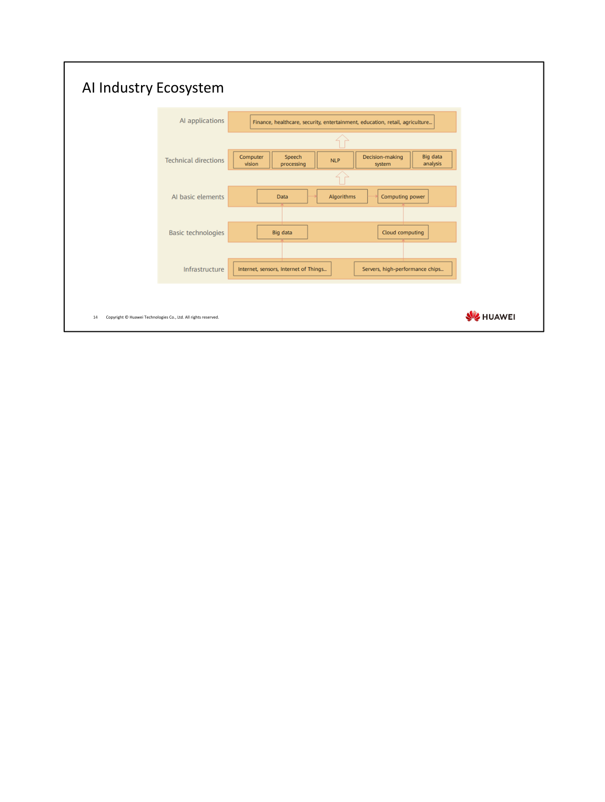
IA Fuerte (Strong AI):
IA Debil (Weak AI):
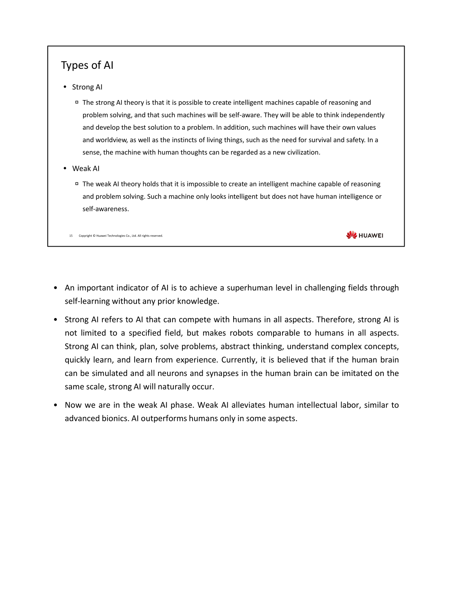
La diapositiva presenta un mapa visual de las principales tecnologias de IA y sus campos de aplicacion, mostrando como se interconectan las diferentes disciplinas dentro del campo de la inteligencia artificial.
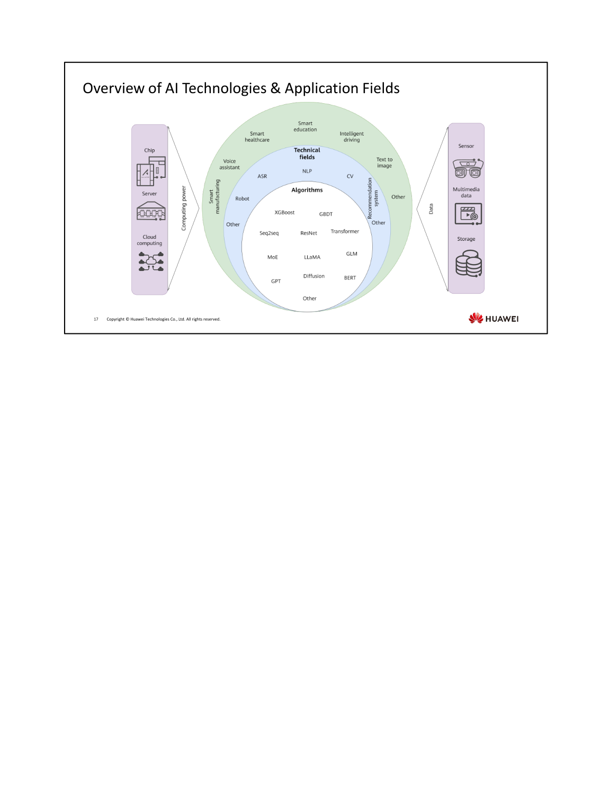
La diapositiva muestra los subcampos mas populares y activos de la inteligencia artificial, incluyendo el aprendizaje automatico, el aprendizaje profundo, el procesamiento de lenguaje natural, la vision por computadora, la robotica y otros subcampos emergentes.
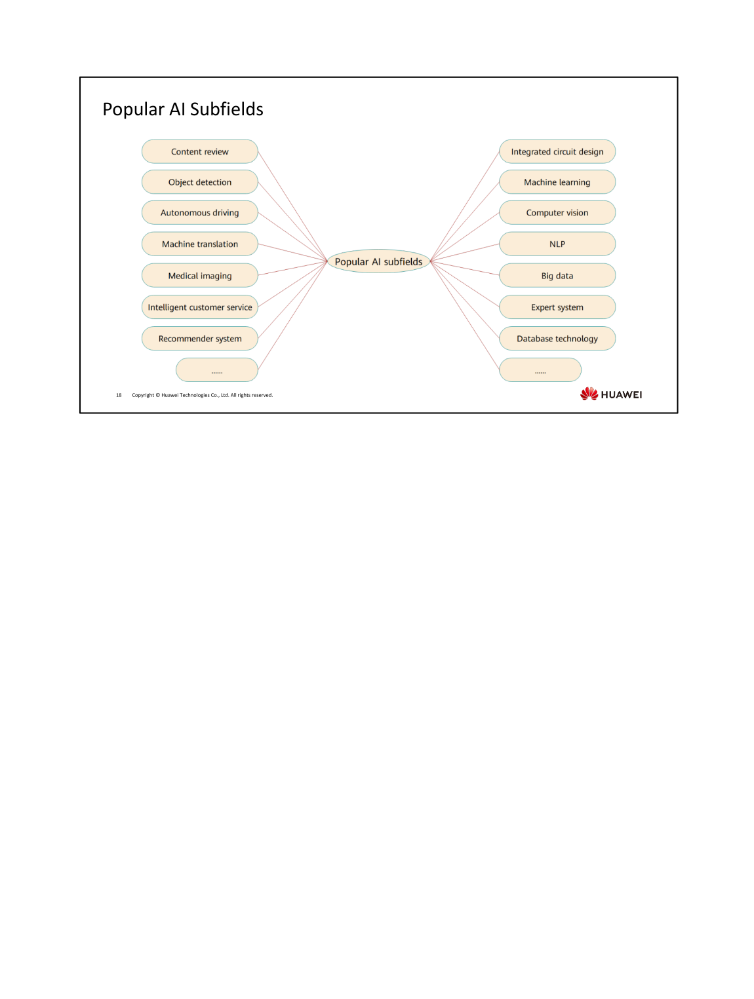
La IA se aplica comunmente en los siguientes campos tecnicos:
El Procesamiento de Lenguaje Natural (NLP) es una rama de las ciencias de la computacion y la inteligencia artificial. Estudia teorias y metodos para implementar una comunicacion efectiva entre humanos y computadoras a traves de lenguajes naturales. El NLP tiene como objetivo permitir que las computadoras comprendan y generen lenguajes humanos.
Desarrollo historico:
Aplicaciones:
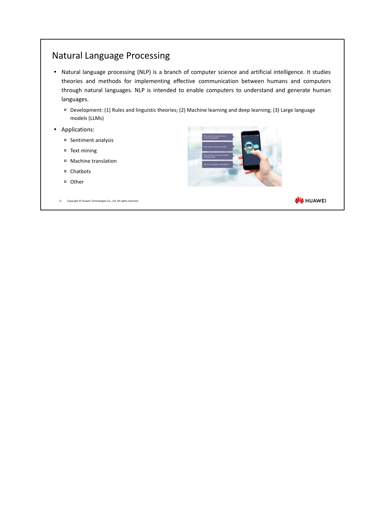
Clasificacion de texto: Clasifica automaticamente el texto en categorias preestablecidas mediante algoritmos, y analiza las caracteristicas del texto para gestionar la informacion de manera eficiente y apoyar la toma de decisiones precisa.
Resumen de texto: Extrae automaticamente la informacion central del texto y genera una version mas concisa mientras retiene las asociaciones semanticas originales y los elementos clave.
Extraccion de informacion: Extrae automaticamente informacion clave, como entidades y relaciones, de grandes volumenes de datos textuales para apoyar el analisis de datos y la toma de decisiones.
Traduccion automatica: Convierte automaticamente un idioma a otro (por ejemplo, chino a ingles, o frances a japones) usando modelos de algoritmos.
Escritura inteligente: Asiste en la generacion de texto de alta calidad, como comunicados de prensa y copias publicitarias, mejorando la eficiencia en la creacion de contenido.
Definicion:
Ejemplo: «No me alegro de escuchar sobre una reduccion de precio pocos dias despues de esta compra. La puntuacion de la memoria flash es de poco mas de 500 puntos.» / «Apariencia agradable y sonido increible. Ahora, la mayoria de los productos electronicos son fabricados por Huawei.»
El etiquetado de secuencias consiste en usar un modelo para etiquetar cada posicion de una secuencia de entrada dada (generalmente una oracion, caracter o palabra en el texto) para formar una secuencia de etiquetas. Este proceso puede verse como un mapeo de secuencia a secuencia.
Ejemplo: «Huawei is a technology company located in Shenzhen, China.»
DET representa determinante, n representa sustantivo, v representa verbo, p representa preposicion y w representa puntuacion.
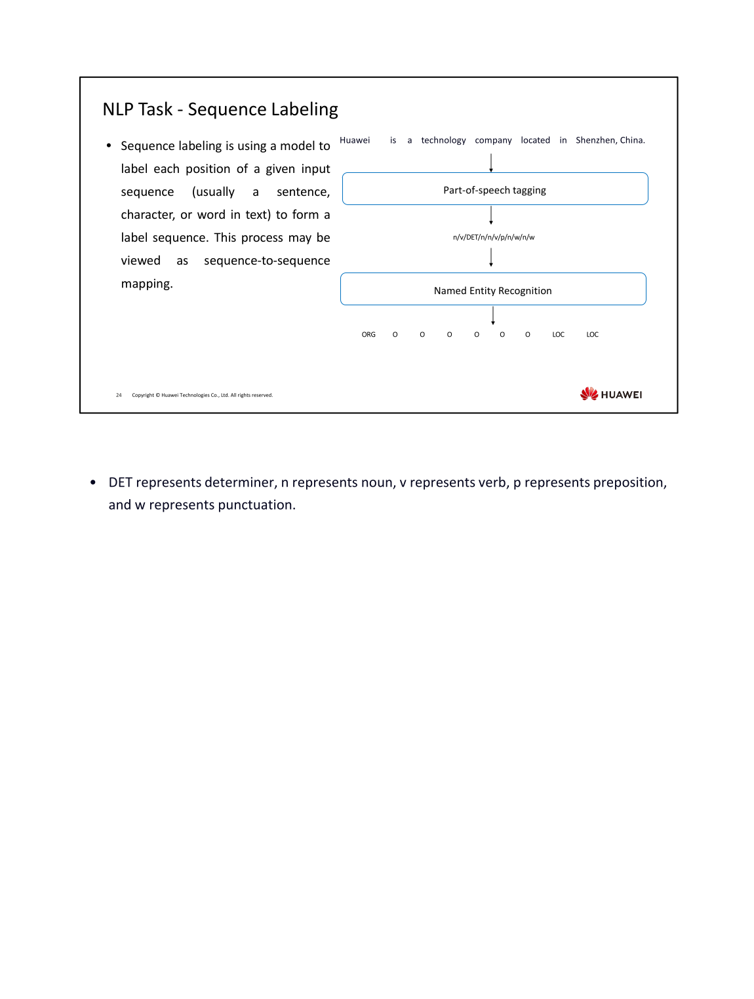
La generacion de texto es un proceso en el cual un algoritmo genera automaticamente contenido textual gramaticalmente correcto y con significado.
Esta tecnologia puede simular el proceso de escritura humana y generar varios tipos de texto, como informes de noticias, correos electronicos, articulos, publicaciones en redes sociales, poemas, capitulos de novelas y traducciones automaticas.
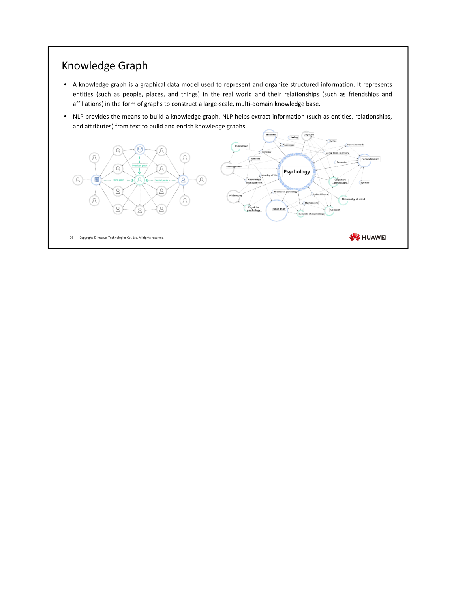
La Vision por Computadora (CV) es una tecnologia que utiliza computadoras y algoritmos para simular el proceso de la vision humana. Involucra extraer informacion de imagenes o videos, analizar y comprender el contenido, y tomar decisiones en consecuencia.
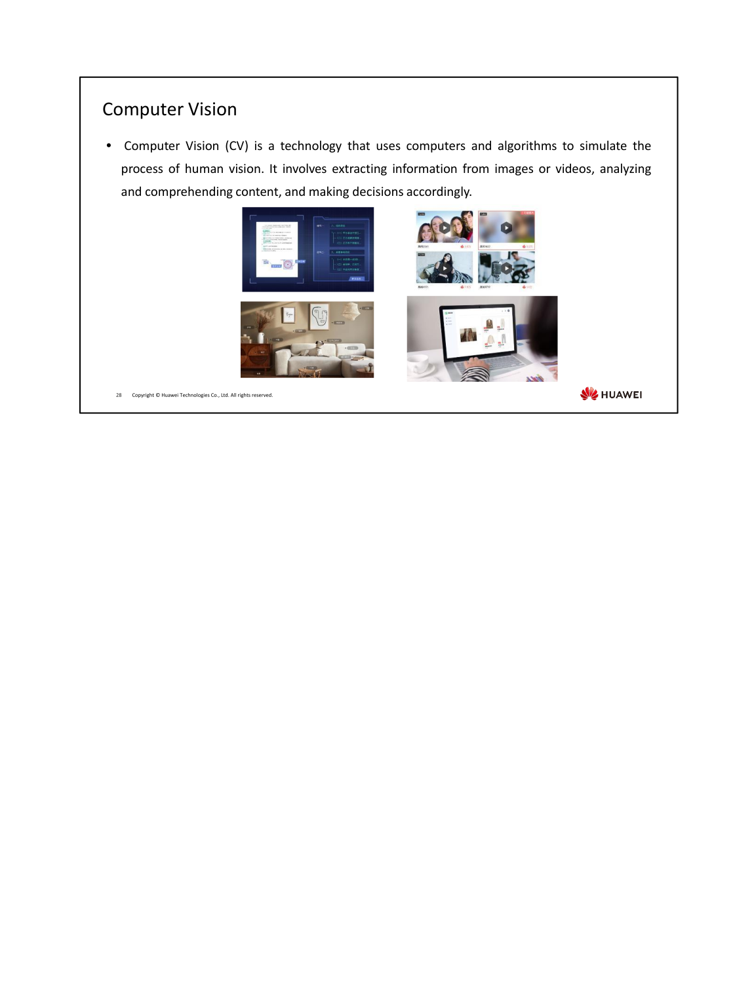
Clasificacion de imagenes: Utiliza grandes cantidades de datos no etiquetados para mejorar la capacidad de representacion de los modelos para aplicaciones en diversos escenarios generales.
Deteccion de objetos: Identifica y localiza objetos en imagenes o videos, apoyando el analisis automatico y la toma de decisiones.
Segmentacion semantica: Asigna una etiqueta de clase predefinida a cada pixel de una imagen, implementando la comprension de imagenes a nivel de pixel.
Restauracion de video (Video inpainting): Restaura y mejora la calidad del video utilizando tecnicas basadas en aprendizaje profundo.
Conduccion inteligente: Permite a los vehiculos percibir su entorno, tomar decisiones y realizar operaciones de conduccion como lo harian los conductores humanos.
La deteccion de objetos es una de las tecnologias fundamentales para el procesamiento de imagenes y la vision por computadora en el campo de la IA. Tiene una amplia gama de aplicaciones, como monitoreo de trafico, busqueda de imagenes, reconocimiento facial e interaccion humano-computadora. Las tecnologias de deteccion de objetos pueden ayudar a detectar objetos en una imagen para su posterior procesamiento con algoritmos inteligentes.
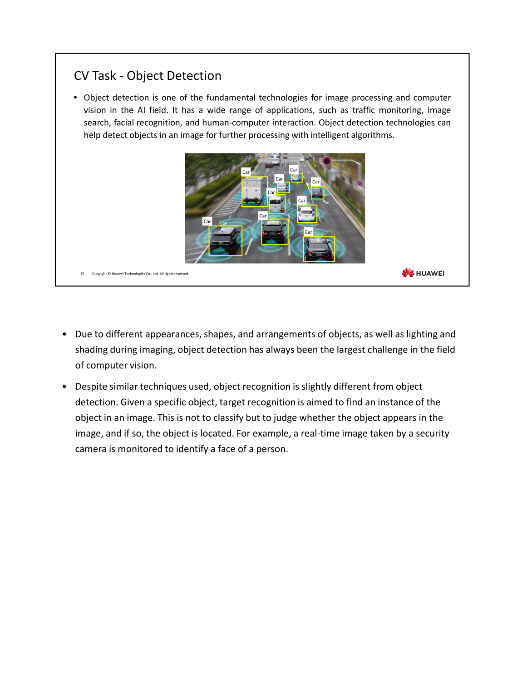
La segmentacion de imagenes es el proceso de particionar una imagen en multiples segmentos segun el problema a resolver.
Existen muchos algoritmos y metodos de aplicacion para la segmentacion de imagenes. Los mas comunes incluyen segmentacion por componentes conectados, segmentacion por movimiento y segmentacion de objetos.
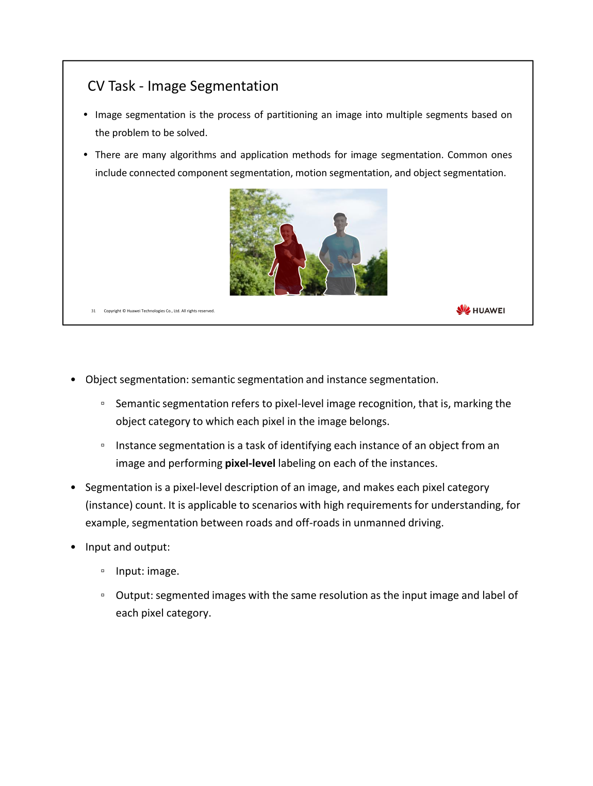
El seguimiento de objetos es un area central de investigacion en vision por computadora y tiene una amplia gama de aplicaciones, como transporte inteligente, monitoreo de seguridad, interaccion humano-maquina y conduccion autonoma.
Los algoritmos de seguimiento pueden obtener las trayectorias de los objetos objetivo en terminos de tiempo para analizar sus comportamientos de movimiento.
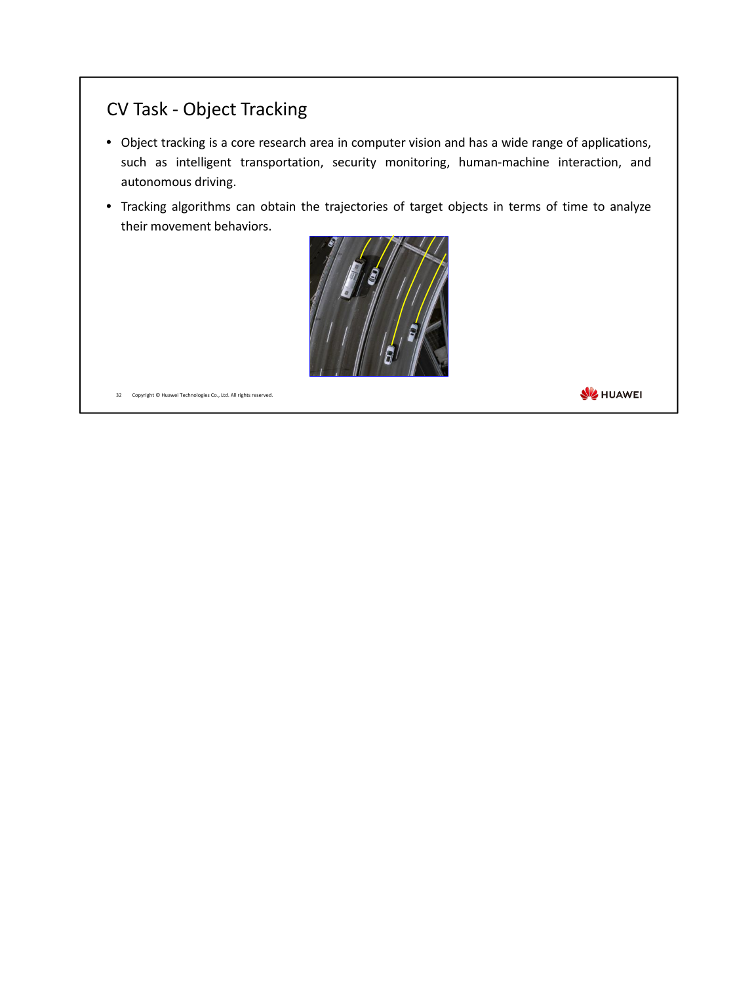
El Reconocimiento Optico de Caracteres (OCR) es el proceso de reconocer caracteres en imagenes o escaneos y convertirlos en texto editable utilizando tecnologias de procesamiento de imagenes como la deteccion y clasificacion de objetos de caracteres.
El OCR mejora la eficiencia del servicio al evitar la entrada manual de informacion. El OCR puede usarse para identificar caracteres en tarjetas de identidad, licencias de conducir, licencias de vehiculos, facturas, formularios de aduanas, tablas generales y texto general.
La generacion de imagenes se refiere a generar una imagen completamente nueva, modificar una parte de una imagen o generar una nueva imagen basada en una existente.
Entrada y salida:
Un modelo fundacional se refiere a un modelo que es entrenado con datos a gran escala, tiene una cantidad masiva de parametros y posee funcionalidades poderosas.
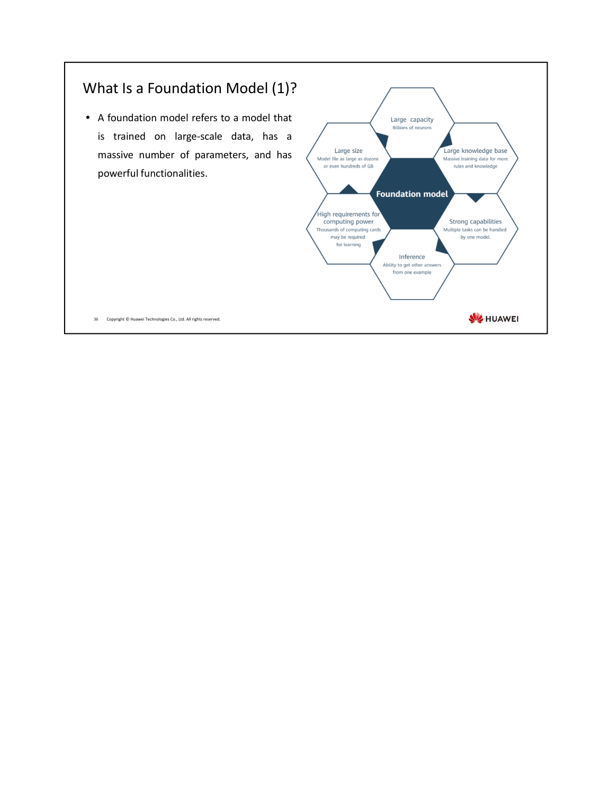
Principios detras de los Modelos Grandes:
Ley de Escalamiento (Scaling Law): A medida que el tamano del modelo aumenta exponencialmente, el rendimiento del modelo aumenta linealmente.
Ley de Chinchilla (Chinchilla Law): El tamano del modelo y la cantidad de tokens de entrenamiento deben escalar a tasas iguales.
Capacidades Emergentes (Emergent Abilities): Cuando el modelo alcanza un cierto tamano y escala, muestra una mejora repentina e inesperada en rendimiento y capacidad de generalizacion.
Lo que hace «grande» a un modelo:
Tres problemas de los modelos grandes:
La diapositiva muestra la evolucion desde RNN/LSTM/CNN hasta el Transformer.
En 2014, investigadores en traduccion automatica propusieron el modelo Seq2Seq. Esta fue una nueva forma de implementar la traduccion automatica de extremo a extremo basada en la arquitectura RNN.
El equipo de investigacion de Google propuso el Transformer en 2017.
Arquitectura del Transformer:
La idea central del modelo Seq2Seq es usar una red codificadora para codificar una secuencia de entrada en un vector de dimension fija o una serie de estados ocultos, y luego la red decodificadora genera una secuencia objetivo palabra por palabra.
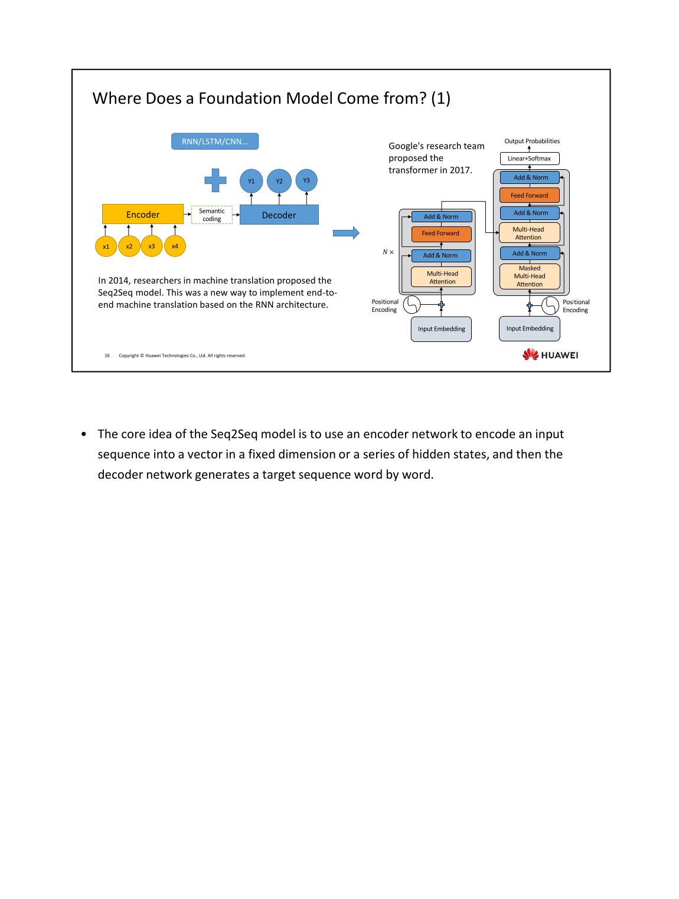
Origen de un modelo fundacional — Transformer
La diapositiva muestra como, con el Transformer como infraestructura, los modelos fundacionales se desarrollan en diferentes ramas.
Con el Transformer como infraestructura, los modelos fundacionales se desarrollan en diferentes ramas.
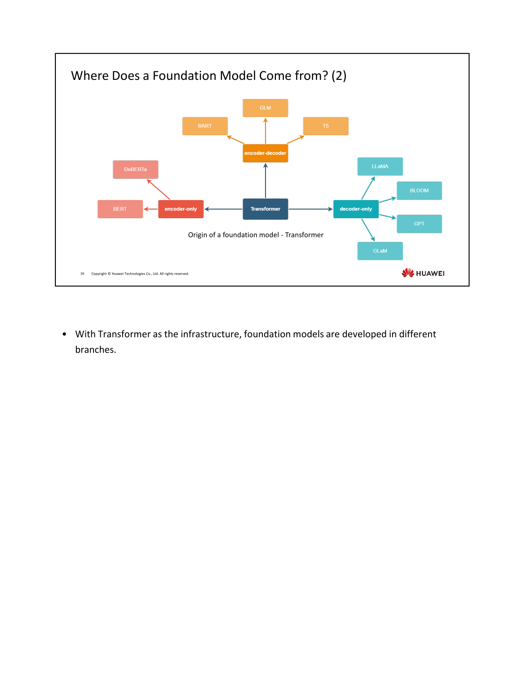
La evolucion de los modelos de IA en tres dimensiones:
Linea evolutiva de modelos: AlexNet → VGG → ResNet → ELMO → Transformer → ViT → GPT → LLaMA → GLM → DeepSeek ...
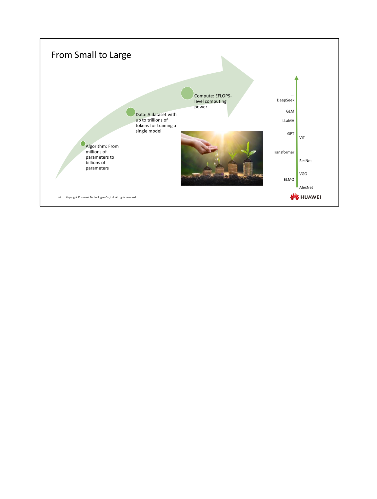
Un modelo fundacional generalmente tiene cientos de millones de parametros y posee poderosas capacidades de representacion y generalizacion.
| Modelo | Parametros | Tokens de Entrenamiento |
|---|---|---|
| ResNet101 | 44.55 M | — |
| ResNet152 | 60.19 M | — |
| YOLOv7 | 74.8 M | — |
| VGG16 | 138 M | — |
| GPT-3 | 175 B | 3,000 B |
| GPT-4 | 17-60 B (estimado) | 13 T |
| LLaMA 1 | 7–70 B | 1.4 T |
| LLaMA 2 | 8–70 B | 2 T |
| LLaMA 3 | 6–130 B | 15 T |
| GLM | 11 B | 400 B |
| T5 | 340 B | 34 B |
| PaLM 2 | 21 B | 3.6 T |
| Stable LM 2 | — | 2 T |
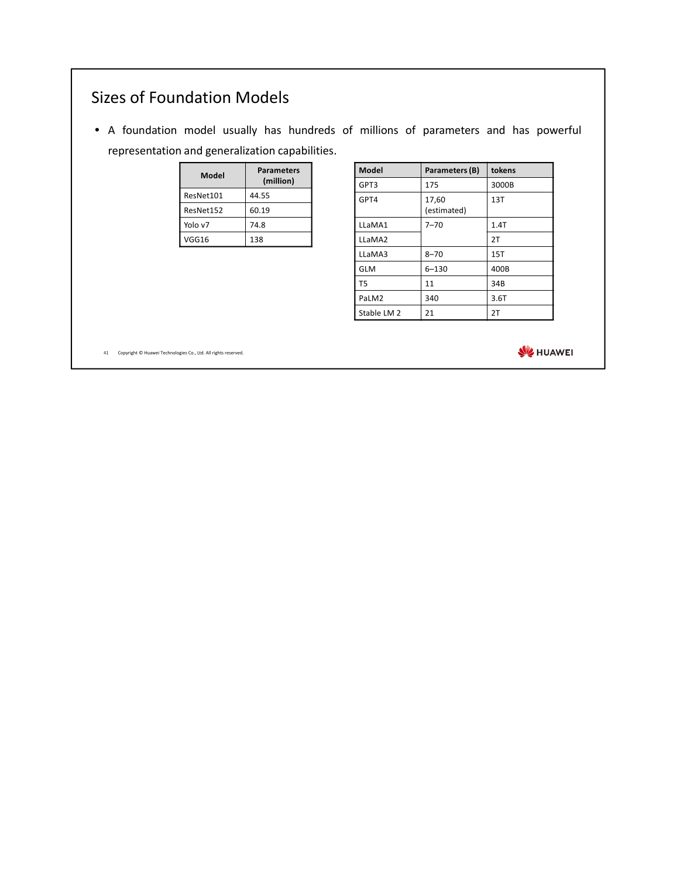
| Aspecto | Modelos Pequenos | Modelos Grandes |
|---|---|---|
| Escala de Datos | Un conjunto de datos generalmente contiene millones o decenas de millones de registros, adecuado para escenarios con recursos limitados (como dispositivos moviles o dispositivos de borde). | Los modelos grandes necesitan procesar y aprender relaciones y patrones mas complejos, por lo que requieren conjuntos de datos a gran escala. Por ejemplo, el conjunto de datos Common Crawl usado para entrenar GPT-3 contiene cientos de miles de millones de tokens, un aumento significativo comparado con el conjunto de datos usado para entrenar un modelo pequeno. |
| Diversidad de Datos | Los datos generalmente se usan para una tarea o dominio especifico (como clasificacion de imagenes medicas y reconocimiento de palabras clave en voz), y no se necesita una cobertura amplia. Los datos son mas centralizados para optimizar el rendimiento del modelo en escenarios especificos. | Los conjuntos de datos involucran multiples dominios y temas, incluyendo pero no limitado a ciencia, tecnologia, cultura, arte, historia y negocios. Los conjuntos de datos ya no se limitan a una sola modalidad o un dominio especifico, sino que presentan caracteristicas multimodales y de dominio cruzado. |
Modelos pequenos son ligeros y altamente eficientes. Son adecuados cuando los recursos son limitados y solo se necesita realizar una tarea. Por ejemplo, un reloj que solo se usa para ver la hora.
Modelos grandes presentan mayores capacidades de procesamiento y precision. Son adecuados cuando se requiere alta complejidad y precision. Por ejemplo, un reloj inteligente puede usarse para ver la hora, monitorear los latidos del corazon, el sueno y otros parametros.
El proceso de aprendizaje de un modelo fundacional consta de dos fases principales:
Los modelos fundacionales requieren datos masivos para el aprendizaje. Es costoso entrenar modelos para cada industria y escenario desde cero. Por lo tanto, el aprendizaje de los modelos fundacionales se basa en un modelo basico pre-entrenado con datos masivos y luego se realiza el ajuste fino basado en datos de la industria.
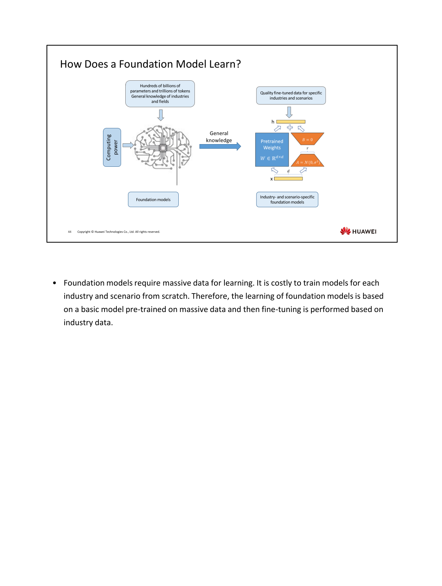
Pipeline integral del modelo: Proporciona una cadena de herramientas de extremo a extremo para el desarrollo, entrenamiento e inferencia de modelos, junto con una coordinacion fluida entre DataOps + MLOps + DevOps, haciendo el desarrollo un 50% mas eficiente.
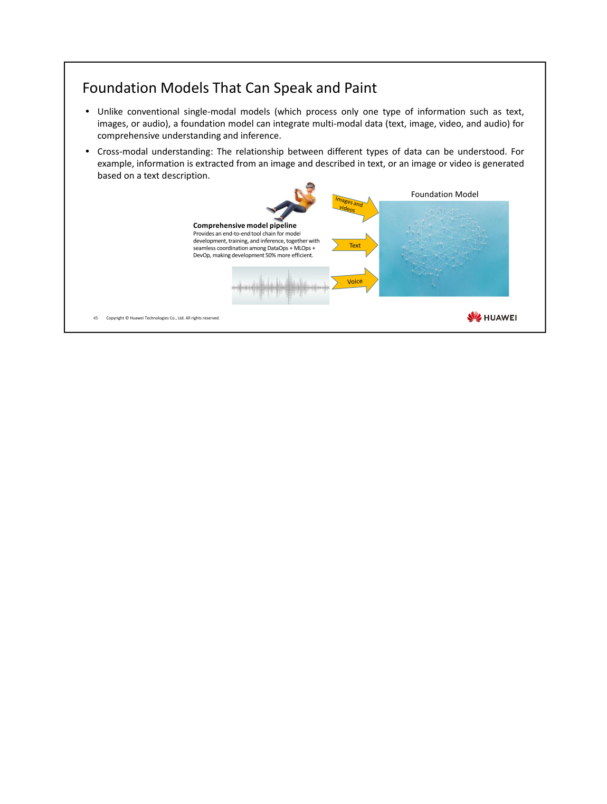
Cuando un sistema complejo consiste en muchos micro individuos, estos se combinan e interactuan entre si. La integracion de muchos micro individuos puede resultar en un fenomeno especial a nivel macro que no puede explicarse usando una sola unidad. Este fenomeno se llama «emergencia».
Actualmente, se consideran dos tipos de tareas que experimentan emergencia:
CoT es una estrategia mejorada de prompting que ayuda a los LLMs a desempenarse mejor en tareas de inferencia compleja, como inferencia aritmetica, de sentido comun y simbolica. A diferencia del ICL, donde los prompts se construyen usando pares simples de entrada-salida, CoT combina pasos de inferencia intermedios, que pueden importar la salida final a los prompts.
Ejemplo — Prompting Estandar vs. Prompting CoT:
| Prompting Estandar | Prompting CoT |
|---|---|
|
P: Roger tiene 5 pelotas de tenis. Compra 2 latas mas de pelotas de tenis. Cada lata tiene 3 pelotas. ¿Cuantas pelotas de tenis tiene ahora? R: La respuesta es 11. P: La cafeteria tenia 23 manzanas. Si usaron 20 para hacer el almuerzo y compraron 6 mas, ¿cuantas manzanas tienen? R: La respuesta es 27. × (Incorrecto) |
P: Roger tiene 5 pelotas de tenis. Compra 2 latas mas de pelotas de tenis. Cada lata tiene 3 pelotas. ¿Cuantas pelotas de tenis tiene ahora? R: Roger empezo con 5 pelotas. 2 latas de 3 pelotas cada una son 6 pelotas. 5 + 6 = 11. La respuesta es 11. P: La cafeteria tenia 23 manzanas. Si usaron 20 para hacer el almuerzo y compraron 6 mas, ¿cuantas manzanas tienen? R: La cafeteria tenia 23 manzanas originalmente. Usaron 20 para hacer el almuerzo. Entonces, tenian 23 - 20 = 3. Compraron 6 manzanas mas, asi que tienen 3 + 6 = 9. La respuesta es 9. √ (Correcto) |
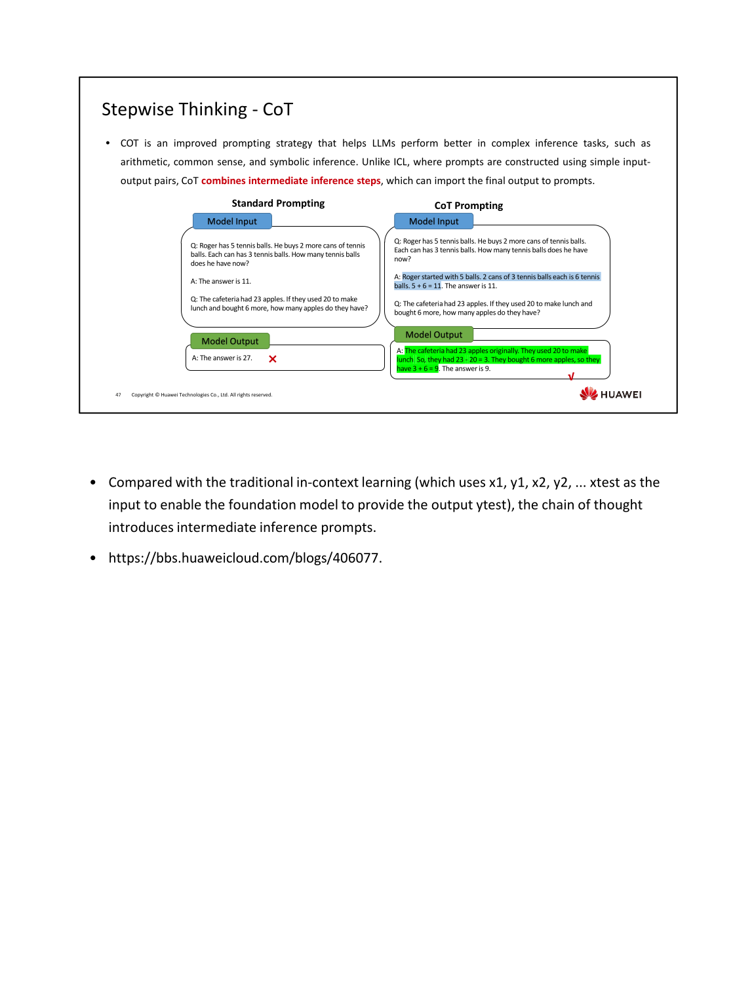
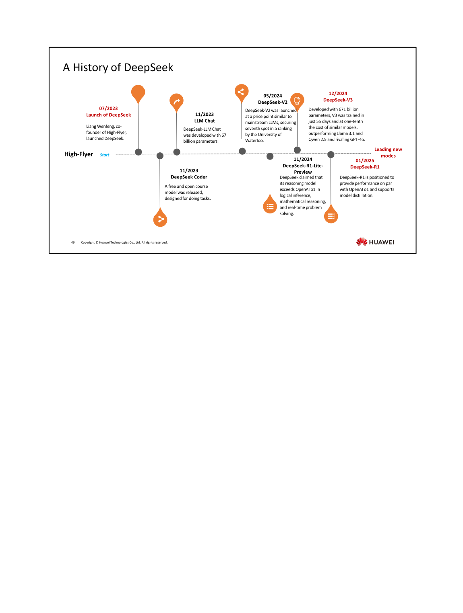
Descargas semanales de la aplicacion:
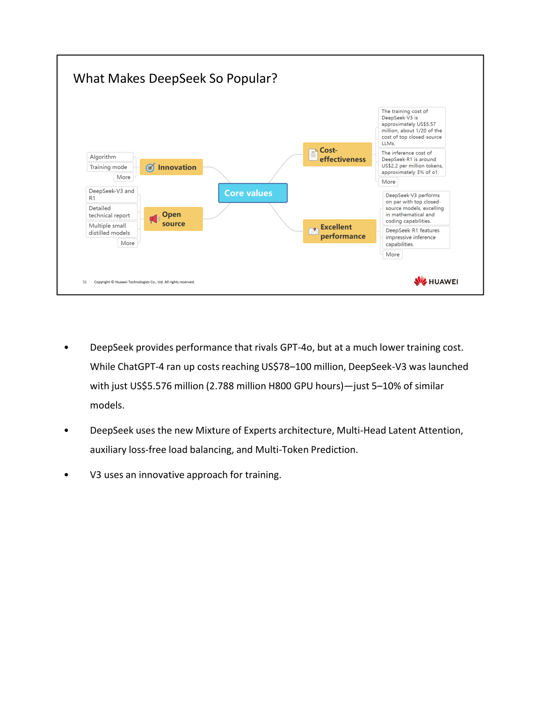
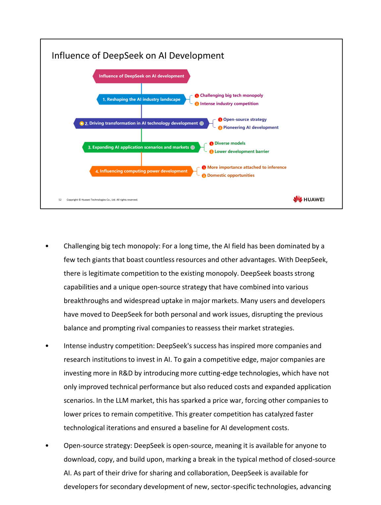
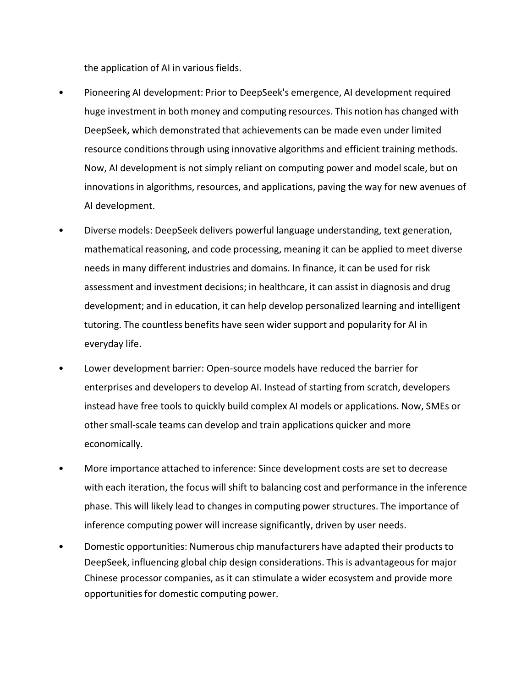
Ejemplos de integracion:
Huawei Celia: El 5 de febrero, Huawei vinculo oficialmente su aplicacion Celia con DeepSeek-R1 (beta). Esta asociacion estrategica ha mejorado Celia para programadores y codificadores, estudiantes que enfrentan calculos matematicos complejos, o profesionales que necesitan analisis de razonamiento logico. Ahora, los usuarios pueden acceder al modelo DeepSeek-R1 a traves de la aplicacion Celia para recibir respuestas precisas rapidamente.
Henan Yunfei Technology: Se asocio con DeepSeek para explorar su potencial en la proteccion agricola de plantas gracias al robusto analisis de datos. Esto llevo a mejores capacidades para identificar patrones y predecir el riesgo de brotes de enfermedades y plagas. La IA puede recomendar proteccion agricola de plantas adaptada a granjas y cultivos basandose en datos de campo en tiempo real.
Geely Auto: El 7 de febrero, Geely Auto anuncio que su modelo grande de IA Xingrui, desarrollado internamente, se integrara con DeepSeek.
Dongfeng Motor: El 7 de febrero, Dongfeng Motor anuncio que toda su linea de vehiculos de pasajeros esta integrada con los LLMs de DeepSeek. Las marcas de su propiedad total, incluyendo MHERO, epi, Aeolus y Nammi, adoptaran pronto el sistema impulsado por IA.
Fin de la Parte 1 — Diapositivas 1 a 54
La Parte 2 continuara con la Seccion 4: Aplicaciones de la IA y la Seccion 5: Debates y Futuro de la IA.